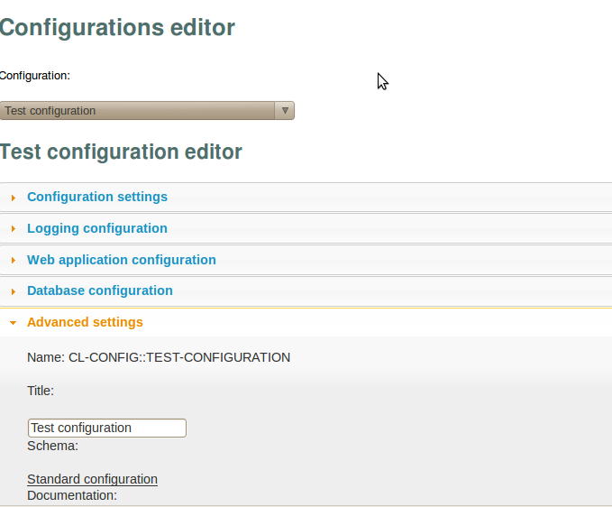

| [Top] | [Contents] | [Index] | [ ? ] |
This is cl-config Common Lisp library documentation
| 1. Introduction | What is cl-config? | |
| 2. Output backends | ||
| 3. Examples | Several configuration examples | |
| 4. Configuration editing | Tool for configuration editing | |
| 5. System reference | ||
| 6. References | Related work | |
| 7. Index | Complete index. |
| [ < ] | [ > ] | [ << ] | [ Up ] | [ >> ] | [Top] | [Contents] | [Index] | [ ? ] |
cl-config is a configuration library for Common Lisp
You can get a copy and this manual at http://common-lisp.net/project/cl-config
| 1.1 Summary | A brief summary of what cl-config is | |
| 1.2 Installation | How to install cl-config | |
| 1.3 Feedback | Bug reports, ideas, patches etc. | |
| 1.4 Conventions | Type-setting conventions in the manual |
| [ < ] | [ > ] | [ << ] | [ Up ] | [ >> ] | [Top] | [Contents] | [Index] | [ ? ] |
cl-config is a configuration library for Common Lisp
| [ < ] | [ > ] | [ << ] | [ Up ] | [ >> ] | [Top] | [Contents] | [Index] | [ ? ] |
To install cl-config, start a Common Lisp session and type the following:
CL-USER> (require :asdf-install) CL-USER> (asdf-install:asdf-install 'cl-config) |
| [ < ] | [ > ] | [ << ] | [ Up ] | [ >> ] | [Top] | [Contents] | [Index] | [ ? ] |
Mail marianomontone at gmail dot com with feedback
| [ < ] | [ > ] | [ << ] | [ Up ] | [ >> ] | [Top] | [Contents] | [Index] | [ ? ] |
Hear are some coding conventions we’d like to follow:
•We don’t want functions to be shorter than the should nor longer than they should. There is no "every function should have at most ten lines of code" rule. We think that coding is like literature to a great extent. So you should strive for beauty and clarity. Again, that your code is object oriented doesn’t imply that your methods will ideally have two lines of code and dispatch to somewhere else; that is not always good at all. It may be good from an object oriented point of view, but it is too low level. We want to think in terms of languages, that is higher level, instead of objects sending messages.
•Use destructuring-bind or let or a pattern-matching library instead of car, cdr, cadr, and the like to obtain more readable code.
•Use widely known Common Lisp coding guidelines: http://web.archive.org/web/20050305123711/www.lisp.org/table/style.htm
| [ < ] | [ > ] | [ << ] | [ Up ] | [ >> ] | [Top] | [Contents] | [Index] | [ ? ] |
There are two output backends: an sexp-backend and a xml-backend
| [ < ] | [ > ] | [ << ] | [ Up ] | [ >> ] | [Top] | [Contents] | [Index] | [ ? ] |
Example:
(define-configuration 'database-configuration ()
(:title "Database configuration")
(:documentation "Database configuration")
(:section :database-configuration "Database configuration"
(:documentation "Section for configuring the database")
(:connection-type "Connection type"
(one-of (:socket "Socket"
(:configuration 'db-socket-configuration))
(:tcp "TCP"
(:configuration 'db-tcp-configuration))))
(:username "Username" :text :documentation "The database engine username")
(:password "Password" :text :documentation "The database engine password")
(:database-name "Database name" :text)
(:database-parameters :text :default "" :advanced)))
(define-configuration 'db-socket-configuration ()
(:title "Socket configuration")
(:section :db-socket-configuration "Socket configuration"
(:path "Socket" :text
:default "/tmp/socket.soc")))
(define-configuration 'db-tcp-configuration ()
(:title "TCP configuration")
(:section "TCP configuration"
(:url "URL" :text
:default "localhost")))
(define-configuration webapp-configuration (logging-configuration)
(:title "Web application configuration")
(:documentation "Web application configuration")
(:section :webapp-configuration "Web application configuration"
(:documentation "Web application configuration")
(:http-server "HTTP server"
(one-of (:apache "Apache" (:configuration 'apache-configuration))
(:hunchentoot "Hunchentoot" (:configuration 'hunchentoot-configuration))))
(:host "Host" :text :default "localhost")))
(define-configuration logging-configuration ()
(:title "Logging configuration")
(:documentation "Logging configuration")
(let-configuration*
((output-logging ()
(output-location "Output location"
(one-of (:standard-output "Standard output" :value '*standard-output*)
(:file "File" :text :default "/tmp/log.log"))))
(debugging-layer (output-logging)
(debugging-levels "Debuggin levels" (list (:info "Info")
(:warning "Warning")
(:profile "Profile"))))
(database-layer (output-logging)
...)))
(:section :logging-configuration "Logging configuration"
(:documentation "Logging configuration")
(:backend "Backend"
(:one-of (:log5 "Log5")))
(:active-layers "Active layers" (list (:debugging "Debugging" (:configuration debugging-layer))
(:database "Database" (:configuration database-layer))
(:control-flow "Control flow")
(:system "System")))))
(define-configuration standard-configuration
(webapp-configuration database-configuration)
(:documentation "Standard configuration for a Gestalt application")
(:page-title "Page title" :type :text :default "Gestalt application"))
|
The typical attributes types are, :text, where the user fill text in; :one-of options*, where the user chooses one of the options in options*; :list list*, where the user selects one or more of the items of the list *list; :bool, a boolean, :maybe option, where the user can disable or enable option, etc.
Configurations can inherit from several configurations (that act like mixins). The same as with classes or models or templates. So, for example, web-app-configuration inherits from logging-configuration. That means the web-app-configuration will have the sections defined in logging-configuration too.
Documentation is used as a section or configuration help from the UI. From the UI, each section is shown collapsable and there’s and option for showing/hiding advanced fields, and the help button.
The user can define several configuration schemes for an application and switch between the configurations. For example, there will probably be a “development configuration”, a “deployment configuration”, a “testing configuration”, and so on.
There’s no need for a GUI, although it is desirable. We can define configurations with files, for example:
(define-configuration-scheme standard-configuration-scheme ()
(:configuration standard-configuration)
(:database-configuration
(:connection-type :socket
(:db-socket-configuration
(:path "/tmp/my-socket.soc")))
(:username "root")
(:password "root")
(:database-name "standard-database"))
(:webapp-configuration
(:host "localhost")
(:http-server :hunchentoot)))
(define-configuration-scheme debug-configuration-scheme (standard-configuration-scheme)
(:configuration standard-configuration)
(:database-configuration
(:database-name "debug-database"))
(:logging-configuration
(:output-location :file "/tmp/debug.log")
(:active-layers :debugging :database
(:debugging-levels :info :warning :error)))
(:documentation "Debugging configuration scheme"))
(define-configuration-scheme test-configuration-scheme (standard-configuration-scheme)
(:configuration standard-configuration)
(:database-configuration
(:database-name "test-database"))
(:logging-configuration
(:output-location :file "/tmp/test.log")
(:active-layers :debugging :database
(:debugging-levels :warning :error)))
(:documentation "Testing configuration scheme"))
|
And then we attach the desired configuration to the application:
(defapplication my-application (standard-application) ... (:configuration 'debug-configuration-scheme)) |
| [ < ] | [ > ] | [ << ] | [ Up ] | [ >> ] | [Top] | [Contents] | [Index] | [ ? ] |
To start the web configuration editor, evaluate:
(require :cl-config-web) (cfg.web:start-cl-config-web) |
and then point your browser to http://localhost:4242
| [ < ] | [ > ] | [ << ] | [ Up ] | [ >> ] | [Top] | [Contents] | [Index] | [ ? ] |
Function for getting a configuration value (the functional version of the cfg macro) path can be one of:
(cfg* ’(:database-configuration :username))
(cfg* :database-configuration.username)
The default configuration used is *configuration* (the current configuration)
Get a configuration-schema by its name
Get a configuration by its name
Starts the web configuration editor
Default arguments are in standard-cl-config-web-configuration
Evaluate (cfg.web:start-cl-config-web) and point your browser to http://localhost:4242
Stops the web configuration editor
Macro for getting a configuration value. path can be one of:
(cfg (:database-configuration :username))
(cfg :database-configuration.username)
The default configuration used is *configuration* (the current configuration)
Define a custom configuration-schema option type. Example:
(define-configuration-schema-option-type :email (&rest args)
(apply #'make-instance 'email-configuration-schema-option-type
args))
|
Syntax for defining a configuration-schema.
Parameters:
- The name of the schema
- A list of schema parents
Comments:
Example:
(cfg::define-configuration-schema postgres-database-configuration ()
(:title "Postgres database configuration")
(:documentation "Postgres database configuration")
(:section :database-configuration "Database configuration"
(:documentation "Section for configuring the database")
(:connection-type "Connection type"
(:one-of (:socket "Socket"
:configuration 'db-socket-configuration)
(:tcp "TCP"
:configuration 'db-tcp-configuration)))
(:username "Username" :text :documentation "The database engine username")
(:password "Password" :text :documentation "The database engine password")
(:database-name "Database name" :text)
(:host "Host" :text :documentation "The database host")
(:database-parameters "Database parameters" :text :default "" :advanced t)))
|
Defines a validator on a configuration.
Example:
(cfg::define-configuration-validator postgres-database-configuration (configuration)
(cfg:with-configuration-section :database-configuration
(cfg:with-configuration-values
(database-name username password host) configuration
(handler-bind
(postmodern:connect database-name username password host)
(postmodern:database-error (error)
(cfg::validation-error
(cl-postgres::message error)))))))
|
Create and register a configuration Example:
(define-configuration debug-configuration (standard-configuration)
(:configuration-schema standard-configuration)
(:title "Debug configuration")
(:section :database-configuration
(:database-name "debug-database"))
(:section :logging-configuration
(:output-location :standard-output)
(:active-layers (:debugging :database))
(:debugging-levels (:info :warning :error)))
(:section :webapp-configuration
(:catch-errors nil))
(:documentation "Debugging configuration scheme"))
|
Define a processor for a custom type
Define a validator for a custom type
Example:
(define-option-validator email-configuration-schema-option-type
(value option)
(valid-mail-address-p value)
"~A is not a valid email address in ~A" value option)
|
Create a configuration without registering globally
Executes body in the context of the given configuration section
Example:
(with-configuration test-configuration
(with-configuration-section :database-configuration
(cfg :username)))
|
Macro for binding a configuration option values
Example:
(with-configuration test-configuration
(with-configuration-section :database-configuration
(with-configuration-values (username) *configuration*
username)))
|
Executes body in the context of the given configuration Example:
(with-configuration test-configuration
(cfg (:database-configuration :username)))
|
The same as with-configuration-values but using the current configuration *configuration*
(with-configuration-section :database-configuration
(with-current-configuration-values (username) username)))
Executes body validating or or not the configurations created in body context (depending the value of value). The default when using this macro is to not validate. This macro is more commonly used for internal implementation options.
Example:
(with-schema-validation (nil)
(setf (cfg :database-configuration.username) 2323))
|
The defined configuration-schemas. Access the confiuration-schemas through the find-configuration-schema function
The current configuration. Use with-configuration macro to set this
The defined configurations. Use find-configuration to access configurations by name
| [ < ] | [ > ] | [ << ] | [ Up ] | [ >> ] | [Top] | [Contents] | [Index] | [ ? ] |
[Common Lisp Directory] [Common Lisp Wiki]
[Common Lisp Directory]: http://common-lisp.net [Common Lisp Wiki]: http://www.cliki.net
| [ < ] | [ > ] | [ << ] | [ Up ] | [ >> ] | [Top] | [Contents] | [Index] | [ ? ] |
| 7.1 Concept Index | The concept index | |
| 7.2 Class Index | The classes index | |
| 7.3 Function / Macro Index | The functions and macros index | |
| 7.4 Variable Index | The variables index |
| [ < ] | [ > ] | [ << ] | [ Up ] | [ >> ] | [Top] | [Contents] | [Index] | [ ? ] |
| Jump to: | B C E F I R S |
|---|
| Jump to: | B C E F I R S |
|---|
| [ < ] | [ > ] | [ << ] | [ Up ] | [ >> ] | [Top] | [Contents] | [Index] | [ ? ] |
| [ < ] | [ > ] | [ << ] | [ Up ] | [ >> ] | [Top] | [Contents] | [Index] | [ ? ] |
| Jump to: | C |
|---|
| Jump to: | C |
|---|
| [ < ] | [ > ] | [ << ] | [ Up ] | [ >> ] | [Top] | [Contents] | [Index] | [ ? ] |
| Jump to: | C |
|---|
| Jump to: | C |
|---|
| [Top] | [Contents] | [Index] | [ ? ] |
| [Top] | [Contents] | [Index] | [ ? ] |
This document was generated by root on April 10, 2011 using texi2html 1.82.
The buttons in the navigation panels have the following meaning:
| Button | Name | Go to | From 1.2.3 go to |
|---|---|---|---|
| [ < ] | Back | Previous section in reading order | 1.2.2 |
| [ > ] | Forward | Next section in reading order | 1.2.4 |
| [ << ] | FastBack | Beginning of this chapter or previous chapter | 1 |
| [ Up ] | Up | Up section | 1.2 |
| [ >> ] | FastForward | Next chapter | 2 |
| [Top] | Top | Cover (top) of document | |
| [Contents] | Contents | Table of contents | |
| [Index] | Index | Index | |
| [ ? ] | About | About (help) |
where the Example assumes that the current position is at Subsubsection One-Two-Three of a document of the following structure:
This document was generated by root on April 10, 2011 using texi2html 1.82.